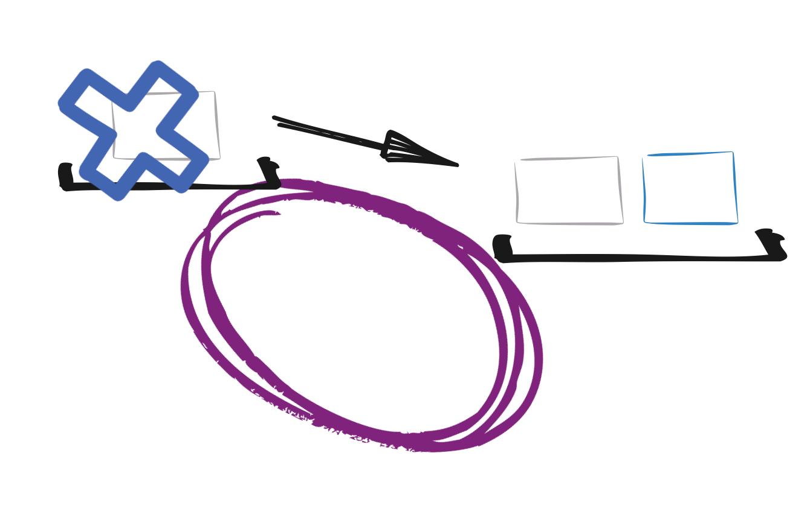

Building distributed, reactive and polyglot applications with Vert.x
Clement Escoffier
Vert.x is a toolkit to build distributed and reactive applications on top of the JVM using an asynchronous non-blocking development model.
Toolkit
- Vert.x is a plain boring jar
- Vert.x components are plain boring jars
- Your application depends on this set of jars (classpath, fat-jar, ...)
Toolkit
These slides are served by a vert.x application:
- packaged as a fat jar
- vertx-core: the main vert.x component
- vertx-web: a component to build modern web applications
- vertx-hazelcast: an implementation of the vert.x cluster manager
Distributed
“You know you have a distributed system when the crash of a computer you've never heards of stops you from getting any work done.” (Leslie Lamport)
Distributed
These slides are a distributed application...
What about having another application
sending messages just here:
No message yet...Sender --> Slides --> Browser
Reactive
Reactive systems are
- Responsive - they respond in an acceptable time
- Elastic - they scale up and down
- Resilient - they are designed to handle failures gracefully
- Asynchronous - they interact using async messages
Reactive
“"Moore's law" is the observation that, over the history of computing hardware, the number of transistors in a dense integrated circuit has doubled approximately every 2 years.”
Unfortunately, no free lunch anymore...
Reactive
CPU manufacturers started hitting a wall with CPU design and speeds.
They simply cannot get a single-core CPU to go any faster.
- Multi-core Processors
- Synchronous and IO blocking architectures cannot make use of all cores
- Change how software is designed
- Need native ways to support parallel work
Reactive
Reactive systems != Reactive programming
You can use reactive programming with Vert.x
Asynchronous
Mind Shift
When interacting with remote or blocking entities:
- the synchronous development model waits.
- the asynchronous development model use notifications.
The asynchronous development can be summarized by:
“Don't wait, we will call you”
Polyglot
Vert.x applications can be developed using
- Java
- Groovy
- Ruby (JRuby)
- JavaScript (Nashorn)
- Ceylon
Asynchronous development model
A mind-shift that makes sense
Asynchrony
“Don't wait, we will call you”
- Events (Signals, IRQ, Messages)
- Handlers (callbacks, subroutines)
These events occur concurrently with the program execution, without the program blocking to wait for results.
Asynchronous operation
An asynchronous operation:
- returns immediately - releases the caller thread as soon as possible
- notifies the caller when the result has been completed
compute(1, 1, this::onResult);
So the thread is free to be used to complete other tasks...
Asynchronous operation
1 thread - n tasks
Asynchronous operation
1 thread - n tasks
Asynchronous operation
Concurrency
I/O Time Scale
I/O is not another instruction in your program, costs are not meaningless:
| Operation | Time cost | |
|---|---|---|
| Memory | L1 / L2 cache reference: | 1 ns / 4 ns |
| Main memory reference: | 100 ns | |
| I/O | Round-trip in same datacenter: | 500,000 ns |
| Physical disk seek: | 4,000,000 ns | |
| Round-trip from US to EU: | 150,000,000 ns | |
I promise you a bright future
Asynchrony leads to operations that can have:
- not been executed (pending)
- executing
- completed
- failed
I promise you a bright future
A Future is a structure acting as a proxy to retrieve the result of an asynchronous
operation.
An AsyncResult is a specialized Future encapsulating the (known and
immutable) result of an asynchronous operation.
Future<String> future = Future.future();
// ...
future.complete("result");
AsyncResult<String> success = Future.succeededFuture("hello");
AsyncResult<String> failure = Future.failedFuture("d'oh!");
I promise you a bright future
Future notifies when the operation completes:
Future<String> future = someAsynchronousOperation();
future.setHandler(ar -> { // <- Handler<AsyncResult<String>>
if (ar.failed()) {
ar.cause().printStackTrace();
} else {
String result = ar.result();
}
});
I promise you a bright future
We can compose Future:
- Concurrent composition:
CompositeFuture.all,CompositeFuture.any - Sequential composition:
Future.compose,Chain
All these operations return a Future and so can be listened using
setHandler
Recap
Asynchrony is not a condition, it's a cure.
Leads to event-based programming, structured around:
- Handlers (callbacks)
- Future and AsyncResult
Vert.x - a quicktart
The basics
Create a Vert.x instance
public static void main(String[] args) {
Vertx vertx = Vertx.vertx();
// Do something with vert.x
}Create a periodic task
public static void main(String[] args) {
Vertx vertx = Vertx.vertx();
vertx.setPeriodic(1000, l -> {
System.out.println("Hello from "
+ Thread.currentThread().getName());
});
}Event loop
Vert.x is structured around an Event Loop

The event loop, you won't block
The handlers are always executed by the same thread.
- All handlers are executed by the same thread
- If a handler blocks the thread, events cannot be dispatched anymore
If the event loop you block, warnings you will see
Vert.x provides a checker verifying that the event loop is not blocked. If you block it for more than 2 (5) seconds, you see:
WARNING: Thread Thread[vert.x-eventloop-thread-0,5,main] has been blocked for 2701 ms, time limit is 2000
...
WARNING: Thread Thread[vert.x-eventloop-thread-0,5,main] has been blocked for 5707 ms, time limit is 2000
io.vertx.core.VertxException: Thread blocked
at java.lang.Thread.sleep(Native Method)
at i.v.s.e.b_kickstart.MyFirstVertxBadApp.block(MyFirstVertxBadApp.java:21)
at i.v.s.e.b_kickstart.MyFirstVertxBadApp.lambda$main$0(MyFirstVertxBadApp.java:15)
at i.v.s.e.b_kickstart.MyFirstVertxBadApp$$Lambda$3/1674896058.handle(Unknown Source)
at i.v.c.i.VertxImpl$InternalTimerHandler.handle(VertxImpl.java:738)
at i.v.c.i.VertxImpl$InternalTimerHandler.handle(VertxImpl.java:709)
at i.v.c.i.ContextImpl.lambda$wrapTask$3(ContextImpl.java:335)HTTP Hello World
vertx.createHttpServer()
.requestHandler(request -> {
// Handler receiving requests
request.response().end("Hello World !");
})
.listen(8080, ar -> {
// Handler receiving start sequence completion (AsyncResult)
if (ar.succeeded()) {
System.out.println("Server started on port "
+ ar.result().actualPort());
} else {
ar.cause().printStackTrace();
}
});
X Cores, X Threads,
X Event loops
Handlers are always executed by the same event loop.
Contexts
Vert.x manages Execution Contexts, and the event loop in one type of context
- You can dispatch a task on the same event loop
- You should always invoke a
Handleron the context having executed you - Remove synchronization constructs
Recap
- To create a Vert.x instance use
Vertx.vertx() - Handlers are executing on Event Loops
- Never ever block the event loop
- There is not one event loop but several
The Event Bus
The spine of Vert.x application...
The event bus
The event bus is the nervous system of vert.x:
- Allows different parts of your application to communicate
- regardless the implementation language
- regardless their location
- regardless whether they run on vert.x or not (using bridges)
The event bus
- Address: Messages are sent to an address (opaque string)
- Handler: Messages are received in handlers. You register a handler at an address. Handlers are called with the event loop thread.
Point to Point
Publish / Subscribe
Request / Response
From local to clustered
Vert.x instances form a cluster
Vertx.clusteredVertx(new VertxOptions(), result -> {
if (result.failed()) {
System.err.println("Cannot create a clustered vert.x : "
+ result.cause());
} else {
Vertx vertx = result.result();
// ...
}
});The event bus is distributed on all the cluster nodes
Distributed event bus
Almost anything can send and receive messages

Distributed event bus
Let's have a java (Vert.x) app, and a node app sending data just here:
No message yet...No message yet...Distributed event bus
Managing failures
Distributed communication may fail
vertx.eventbus().send(..., ...,
new DeliveryOptions().setSendTimeout(1000),
reply -> {
if (reply.failed()) {
System.out.println("D'oh, he did not reply to me !");
} else {
System.out.println("Got a mail " + reply.result().body());
}
});Managing failures
Is a timeout enough to manage failures ?
- Impossibility of Distributed Consensus with One Faulty Process - Fisher, Lynch, Paterson, 1985
- A timeout does not necessary mean an operation failure, it means that something fails, we don't know what.
Balancing the load
When several consumers listen to the same address, Vert.x dispatches the sent messages using a round robin.
So, to improve the scalability, just spawn a new node!
Recap
- The event bus is the spine of all vert.x applications
- It can be local or distributed
- It provides 3 types of delivery: point to point, publish / subscribe, request - response
- Anything can interact with the event bus
Distributed data structures
Distributed sharing is great!
Distributed data structures
Nodes from a cluster can share data:
- Lock
- Counter
- Map (local and distributed)
Counter
Distributed structures => Asynchronous API, and may fail
// Get the counter
vertx.sharedData().getCounter("some-counter", ar -> {
if (ar.succeeded()) {
Counter counter = ar.result();
// Use it
counter.incrementAndGet(nv -> {
System.out.println("Value = " + nv.result());
});
}
});Maps
There are two types of maps:
- Local maps: shared between entities from the same nodes, Synchronous API
- Clustered-wide maps: distributed on the cluster, Asynchronous API
Distributed Maps
vertx.sharedData().getClusterWideMap("some-map", ar -> {
if (ar.succeeded()) {
AsyncMap map = ar.result();
map.put("foo", "bar", done -> {
if (done.succeeded()) {
System.out.println("entry inserted in the map");
} else {
System.out.println("entry not inserted : " + done.cause());
}
});
});Recap
- Vert.x provides also distributed data structures
- Lock, Counter, Map
- Distributed structures are accessbile using an asynchronous API
- Operations may fail
Verticles
The building block
Organizing your code
Verticles
- Verticles are chunk of code that get deployed and run by Vert.x
- Verticles can deploy other verticles
- Verticles can be written in Java, Groovy, JavaScript, Ruby, Ceylon...

Instances
A verticle can be instantiated multiple times:
Balance the load on several event loop -> on several CPU cores
Fail-over
In High-Availability mode, verticles deployed on a node that crashes are redeployed on a sane node of the cluster.
Polyglot verticles
Polyglot verticles
Let's plug there, messages emitted by a Ruby verticle, a Groovy verticle and a JavaScript verticle
Recap
- Verticles provides a way to structure your code
- Provide deployment facilities (fail-over, instances...)
- Verticles can be developed in any supported language
Leaving in a blocking world...
Because not everything is asynchronous yet...
Dealing with blocking I/O
Blocking I/O take place when dealing with external systems
But you must not block the event loop...
- Use a worker verticle
- Use the
executeBlockingconstruct
Worker verticles
Worker verticles are not executed in the event loop but by a worker thread.
Worker verticles
- Worker verticles are never accessed concurrently
- No need for concurrency constructs
- You can block in a worker verticle, but not for too long...
vertx.deployVerticle(MyWorkerVerticle.class.getName(),
new DeploymentOptions().setWorker(true));
execute Blocking
executeBlocking let's you call blocking code and then go back to the event loop with
the result
Recap
- You will have to deal with blocking systems
- Vert.x provides 2 ways:
- Worker verticles
executeBlocking
That's just the beginning
That was just vertx-core
Asynchronous data access
Vert.x provides async clients for:
- JDBC
- Mongo (async driver)
- Redis (naturally async)
Asynchronous data access
When dealing with a blocking data store (such as JDBC)

Async JDBC Client
jdbc.getConnection(ar -> {
SQLConnection connection = ar.result();
connection.query("SELECT * FROM Beer", resp -> {
if (!resp.failed()) {
List<Beer> beverages =
resp.result().getRows().stream()
.map(Beer::new).collect(Collectors.toList());
}
//...
});
});
Modern web apps
Modern web applications
- Have a lots of frontend code
- REST and more
- Bi-directional interactions with the server
- Real-time
Vert.x web is a vert.x component that let you implement such kind of app
Vert.x Web - REST api
Vert.x Web - REST api
Router router = Router.router(vertx);
router.route("/assets/*").handler(StaticHandler.create("assets"));
router.get("/api/whiskies").handler(this::getAll);
router.route("/api/whiskies*").handler(BodyHandler.create());
router.post("/api/whiskies").handler(this::addOne);
router.put("/api/whiskies/:id").handler(this::updateOne);
router.delete("/api/whiskies/:id").handler(this::deleteOne);
//...
vertx.createHttpServer()
.requestHandler(router::accept)
.listen(8080);
What about performances ?
Because we do it well, and we do it fast
Techempower - fortune
Request -> JDBC (query) -> Template engine -> Response

Techempower - DB Update
Request -> JDBC (query and update) -> JSON response -> Response
This is not the end();
But the first step on the Vert.x path